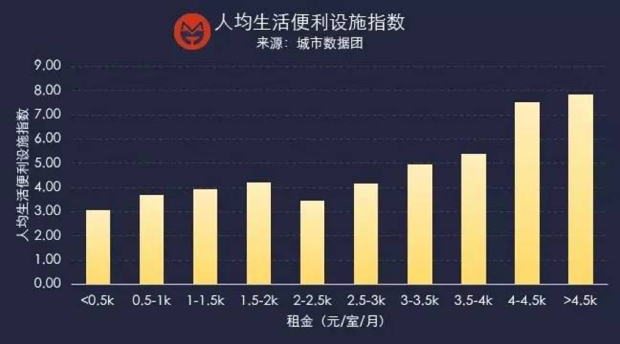
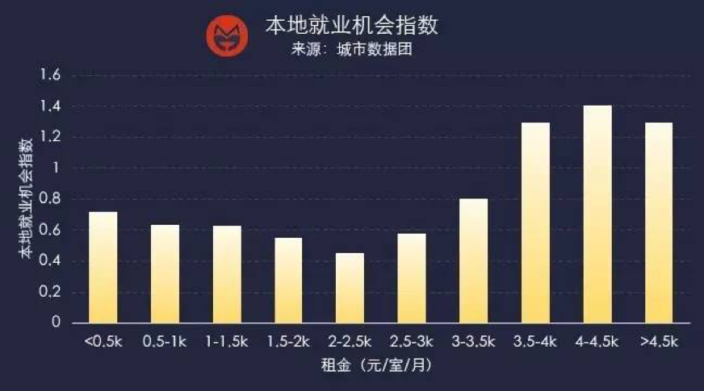
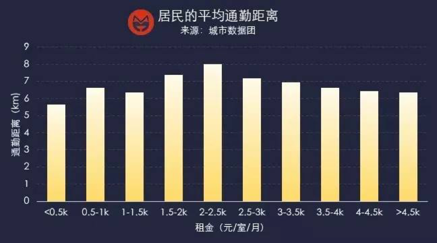
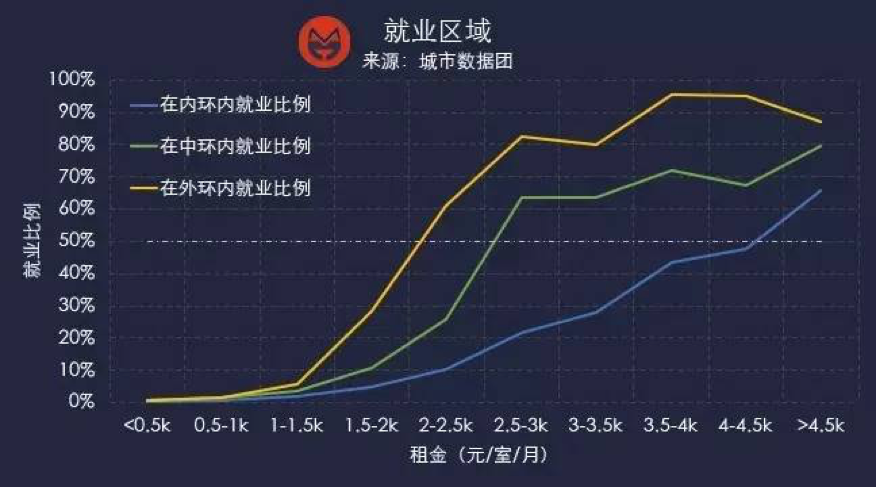

我们以200m-500m空间尺度下的居住单元内每个房间的月租单价（房屋月租总价除以房间数）来划分地域和人群的阶级。
不同阶层群体的空间分布是不同的。
接下来，我们从生活便利度、本地就业机会、平均通勤距离和职业结构这四个角度来评价一下不同租金的居住空间单元对应的阶层群体的生存质量。
我们综合了交通设施、生活服务设施、体育健身场所、购物场所、餐饮场所等poi的数量和密度，合成了“生活便利设施指数”，并除以该地区的常住人口数。该指数的人均水平越高，说明该地区的生活便利程度越高。结论显示，人均生活设施的便利程度总体随着租金的涨幅而提升，但在1.5-3k元/室/月 处出现低谷。
以街镇的就业岗位数量和常住劳动年龄人口的比例，衡量地区的本地就业机会。该指标越大，说明本地就业机会越大。结果显示，随着不同阶层租金的提升，本地就业机会指数先减后增，呈现“U型”。
我们筛选出了晚上6：00-9：00出现在这些商圈的人群，然后追踪他们的居住地址，从而绘制出9大商圈的客流分布。研究发现，各大商圈的客流基本符合就近原则、轨道交通建设对延展客流来源地的作用非常显著、商圈的影响范围很难跨越黄浦江。
随着租金的变化，不同阶层的通勤距离从短到长再到短，租金2~2.5k/房间/月的阶层平均直线通勤距离最长，达到了8km。不仅如此，随着租金水平的提升，人们前往市区通勤的比例在不断上升。
 以各地区的通勤人数、通勤方向和工作地区的岗位结构等要素，推测出不同阶层居民的职业结构，并借用 “区位熵”的概念定义了“职业密集度”，以此表征各阶层人群的职业分布情况。结果显示，租金在4.5k以上的群体和0.5k以下的群体呈鲜明的对比，前者从事金融业的比制造业的密集度要高大约8倍，而后者从事制造业的比从事金融业的密集度要高出大约18倍。